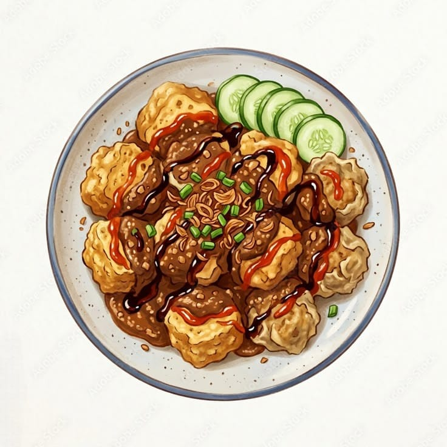
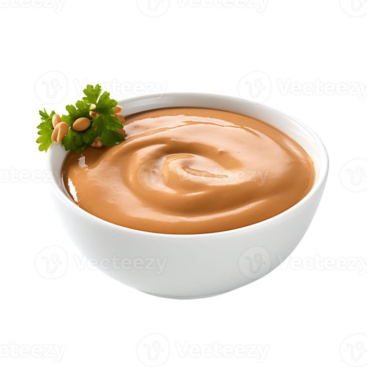
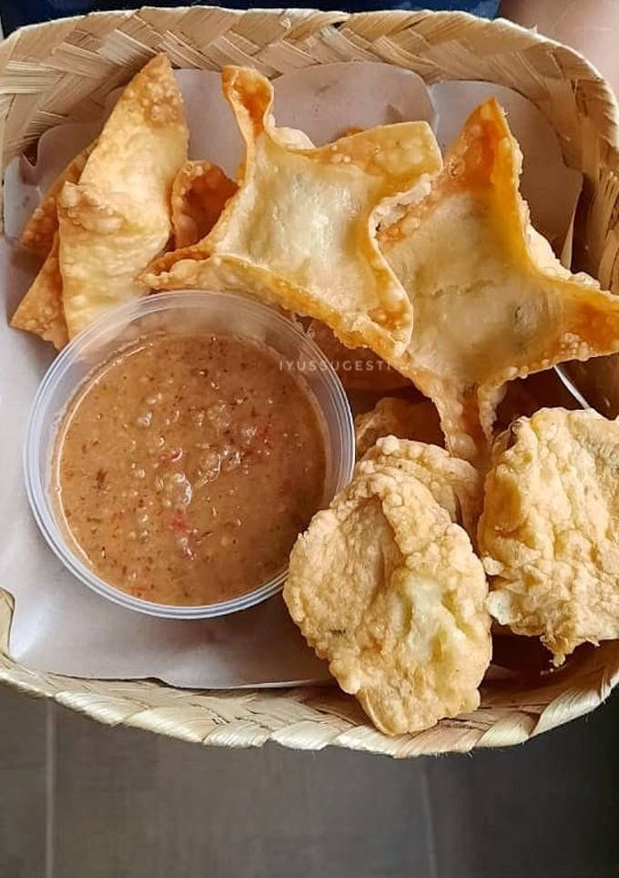
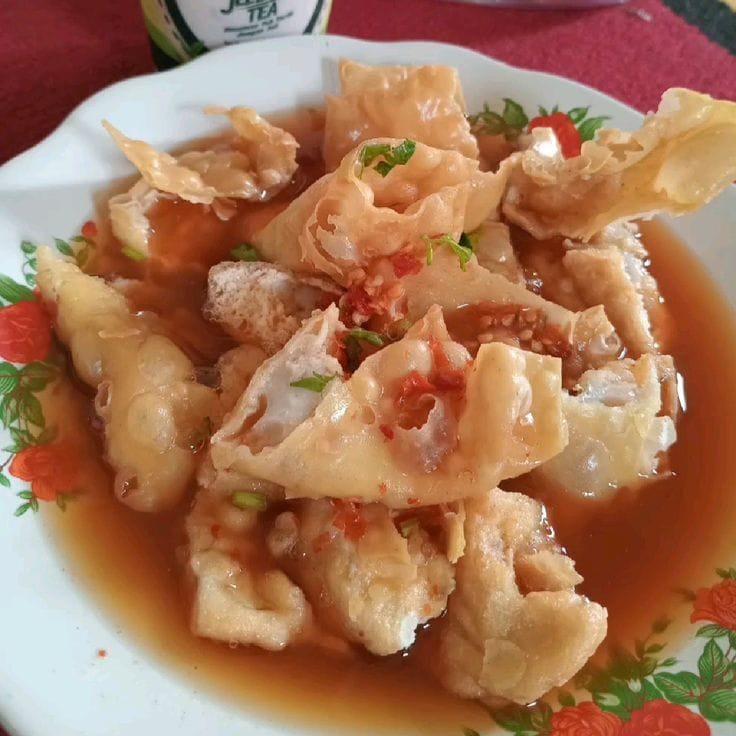
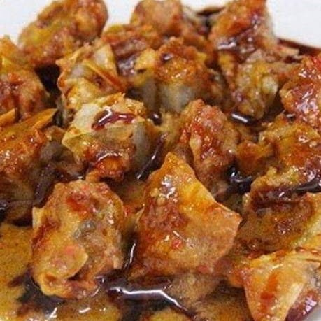
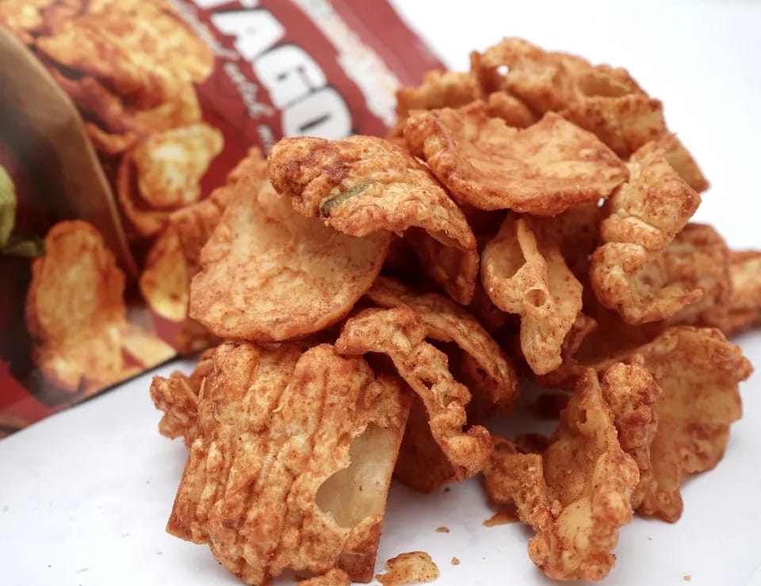
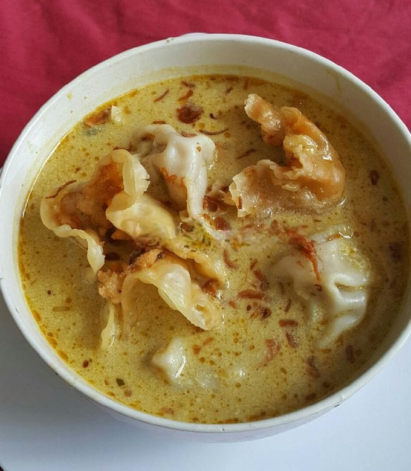
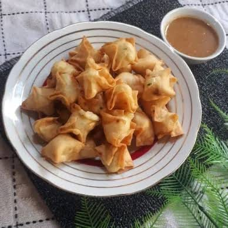
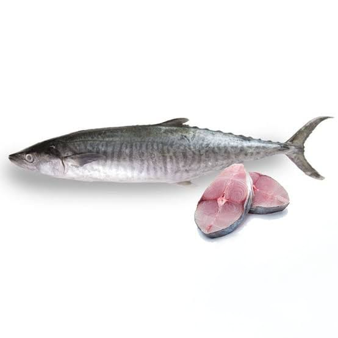
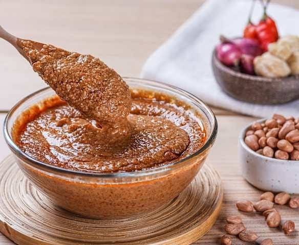

Pengertian & Sejarah
Cari tahu arti nama Batagor dan bagaimana camilan legendaris ini pertama kali muncul di Bandung.
Baca selengkapnyaJelajahi pengertian, sejarah, jenis, hingga cara membuat Batagor, jajanan gurih khas Bandung yang kini digemari di banyak kota.

Cari tahu arti nama Batagor dan bagaimana camilan legendaris ini pertama kali muncul di Bandung.
Baca selengkapnyaDari yang digoreng garing sampai yang berkuah hangat, kenali berbagai variasi Batagor di sini.
Lihat jenisnyaIngin membuat Batagor sendiri di rumah? Ikuti tahapan resep yang dibagi langkah demi langkah.
Mulai memasak
Batagor adalah singkatan dari Bakso Tahu Goreng. Camilan ini terbuat dari tahu yang diisi adonan ikan tenggiri, digoreng hingga garing, lalu disajikan bersama saus kacang kental, kecap manis, dan perasan jeruk limau.
Batagor pertama kali muncul di Bandung, Jawa Barat, sekitar akhir tahun 1970-an. Camilan ini tercipta dari kreativitas pedagang bakso tahu yang menggoreng dagangan yang tidak habis terjual agar bisa disajikan kembali keesokan harinya.
Ternyata versi goreng ini justru lebih gurih dan renyah dibanding versi rebusnya, sehingga cepat digemari dan mulai dijajakan berkeliling kota dengan gerobak dorong maupun sepeda.
Dari sekadar jajanan kaki lima, kini Batagor telah menjadi salah satu camilan khas Indonesia yang paling dikenal, hadir dalam berbagai variasi, dan terus digemari lintas generasi.
Menyebar dari gerobak ke gerobak di seluruh Bandung.
Mulai dijual di berbagai kota besar di Indonesia.
Menjadi jajanan favorit nasional dengan banyak variasi baru.
Batagor mendunia lewat restoran dan konten kuliner daring.

Versi paling klasik dan paling banyak dicari. Tahu, kulit pangsit, dan siomay ikan digoreng kering hingga renyah keemasan, lalu disiram saus kacang kental dan kecap manis. Biasanya disantap dengan tambahan perasan jeruk limau dan sambal.
Geser ke samping untuk melihat varian lainnya.

Disajikan dalam kuah kaldu hangat berbumbu, mirip mi kocok. Cocok dinikmati saat cuaca dingin.

Alternatif yang lebih rendah minyak, dipanggang di atas bara hingga sedikit gosong dan beraroma smoky.
Diberi tambahan telur puyuh di dalam adonan untuk tekstur dan rasa yang lebih kaya.

Setelah digoreng, dilumuri bubuk cabai kering ala jajanan kekinian yang pedas dan gurih.

Variasi kuah dengan tambahan bumbu kari dan santan, memberi rasa gurih yang lebih kaya rempah.

Dibuat dalam ukuran kecil seperti cocktail, cocok sebagai camilan pesta atau teman arisan.
Pilih salah satu resep di bawah ini untuk melihat tahapan pembuatannya.

Isian klasik menggunakan ikan tenggiri segar.
Lihat tahapannyaAlternatif isian tanpa ikan, cocok untuk yang tidak menyukai seafood.
Lihat tahapannya
Saus pelengkap wajib yang membuat Batagor semakin gurih dan nikmat.
Lihat tahapannyaJawab 5 pertanyaan singkat tentang Batagor dan lihat skormu.
Kuis ini terdiri dari 5 soal pilihan ganda. Semoga berhasil!
Proyek website edukasi Batagor ini dikembangkan oleh mahasiswa S1 Teknik Informatika Universitas Tarumanagara sebagai pemenuhan tugas UTS Pemrograman Web.
Mahasiswa Teknik Informatika
Mahasiswi Teknik Informatika
Mahasiswa Teknik Informatika
Mahasiswa Teknik Informatika
Punya pertanyaan, kritik, atau saran untuk pengembangan website ini? Silakan hubungi kami!